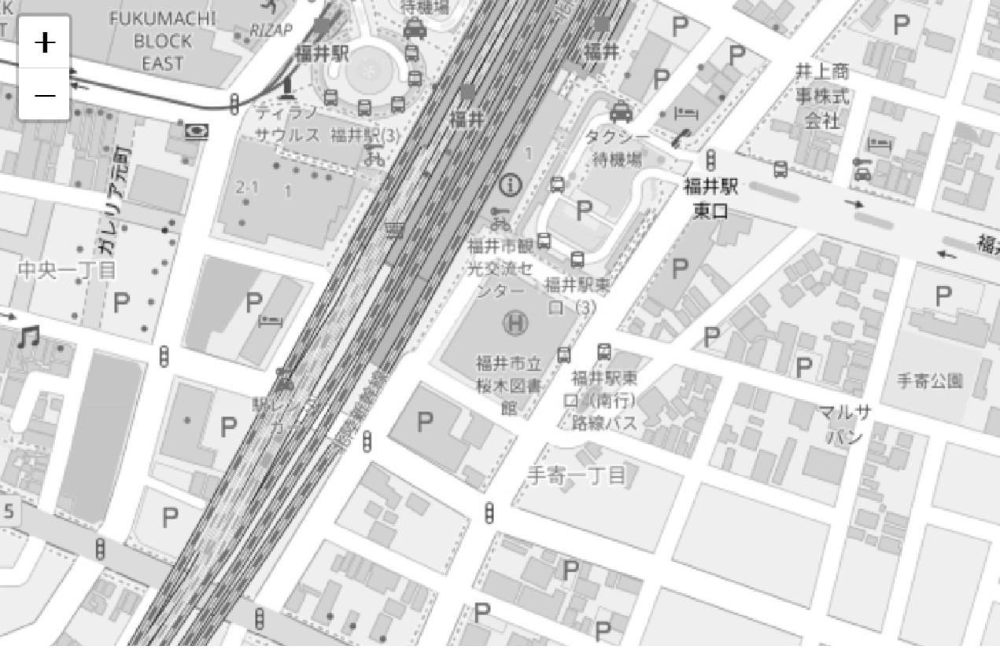

見られる → 押される → 来てもらう
行動につながるアクセスマップ

実際に使われる地図です。
タップして、ルート検索まで体験できます。
初めての人でも迷わない
全体が一瞬で分かる
今日・今行ける
Google Mapは情報が多すぎる。
画像地図は更新できない。
そして、リンクが1本だと「どこから来たか」も分かりません。
AreaMapは
行くために必要な情報だけに絞り、
流入元別URLで反応も見える化します。
投稿は見られている。
でも、来店につながらないのは「迷う」「動けない」から。
プロフィールリンク用のURLを作って、
そのままルート検索へ。
見た → 押した → 行ける（しかも計測できる）
QRを読み込む。
迷わず確認する。
そのままルート検索へ。
さらに、チラシ専用URLにしておけば
「QRは何回読まれた？」まで分かります。
画像でも“案内”はできます。
でもAreaMapは
“来店につながる導線”を作れて、反応も見えます。
Entrance Packなら「まず整える」。
Last30 Navigatorなら「最後の30mで迷わせない」。
Event Navigatorなら「複数店舗の探索・分岐を迷わせない」。
作って終わりにしません。
見るのは「流入元」「閲覧」「行動」「注目ポイント」。
だから、次に直す場所がすぐ分かります。
Entrance Packは「入口・駐車場・料金など、迷いポイントを固定導線で整える」。
Last30 Navigatorは「最後の30m（敷地内・入口のズレ）で迷わせない」。
Event Navigatorは「複数店舗・複数導線の探索と分岐を迷わせない（AI対応）」です。
既存のイラスト地図に、迷いポイントと見せたい情報を整理。
流入元別URL＋最低限の計測で、まずは反応を作ります。
初期：10,000円 / 月額：3,000円
Leaflet＋イラスト地図オーバーレイ＋ルート表示。
「敷地内/入口のズレ/裏口」など、Google Mapが弱い部分を補います。
初期：29,800円 / 月額：10,000円
商店街イベント・マルシェ・複合施設など、
「どの店に行く？」から「どう行く？」までを一気に短縮します。
価格：要相談（会場規模・出店数で変動）
迷ったら：
「まずEntrance Packで導線を整える → 迷いが残るならLast30 Navigator → 複数店舗ならEvent Navigator」
が一番失敗しにくいです。
YES / NOで答えるだけの
無料ヒアリングです。
YES / NOで答えるだけです
今の課題に合わせて、
「迷わせない地図」を一緒に作れます。
Entrance Packは必要最小限のスポットで整理。
Last30 Navigatorは「最後の30m」を目印/入口情報で補強します。
HP用 / Instagram用 / チラシQR用…
URLを分けるだけで、反応の差が分かります。
PV/UU・CTAクリック・画像タップを見て改善。
Last30 Navigatorは月次ミニレポートで改善提案まで出します。
Event Navigatorは会場の探索データを使って導線を最適化します。